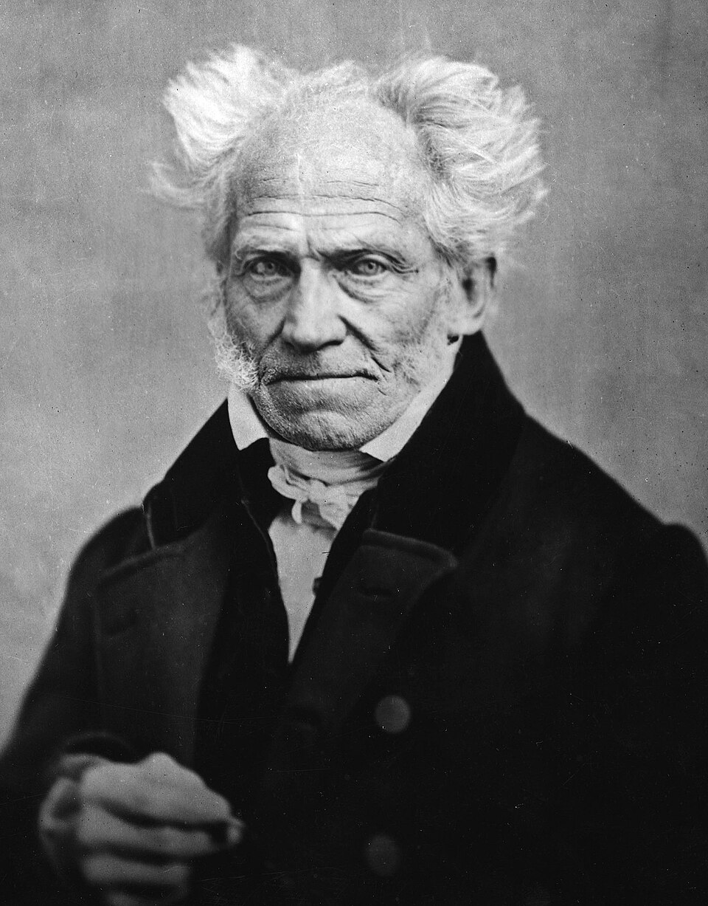
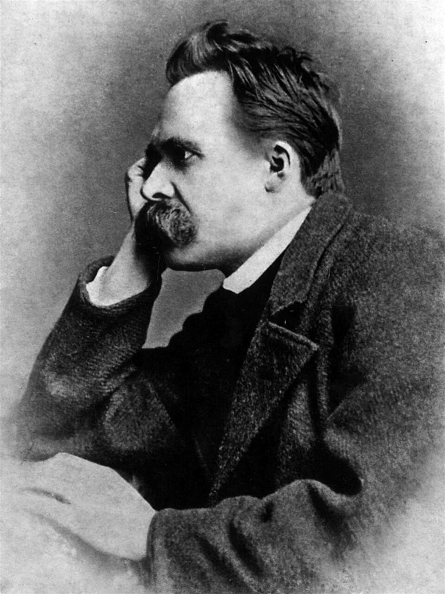
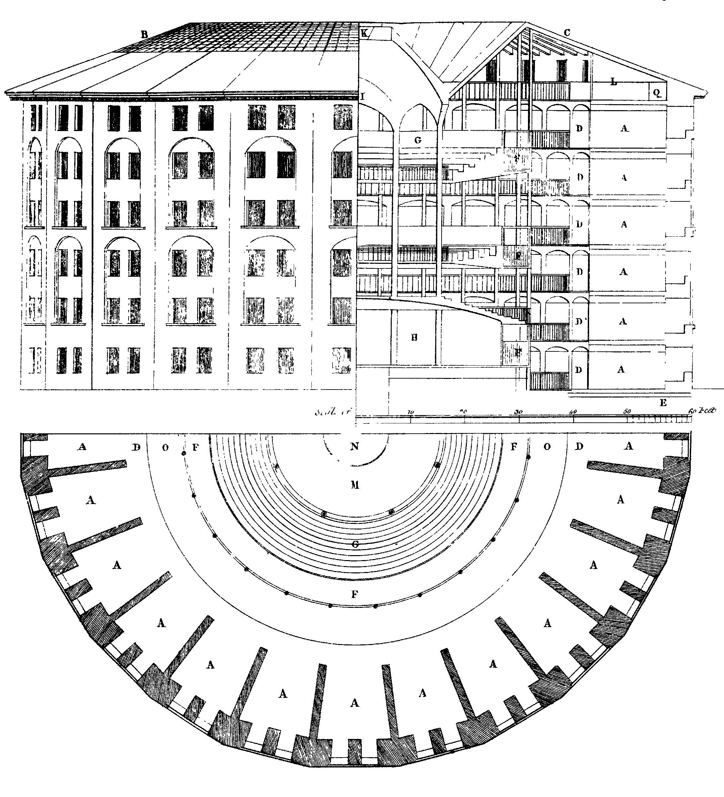

15/10/2026
O homem que jaz doente na cama talvez perceba que em geral está doente de seu ofício, de seus negócios ou de sua sociedade, e que por causa dessas coisas perdeu a capacidade de reflexão sobre si mesmo: ele obtém esta sabedoria a partir do ócio a que sua doença o obriga. (NIETZSCHE, F. Humano, demasiado humano, af. 289.)



bit.ly/filosofia-vc
O homo economicus contemporâneo é dotado de intenso princípio de racionalidade formal que o leva: 1. a buscar sem qualquer hesitação a própria felicidade; 2. a dar a preferência aos objetos visíveis que lhe trarão o máximo de satisfação.
BAUDRILLARD, J. A sociedade de consumo. Lisboa: Edições 70, 1995 (adaptado).
Considerando o tipo de racionalidade descrita no texto, os projetos de autorrealização dominantes na contemporaneidade estão centrados no
A aprimoramento moral.
B alinhamento político.
C capital simbólico.
D vínculo religioso.
E valor cultural.
A ontologia como fundamento da ética foi o ponto de vista original da filosofia. A separação das duas, que é a separação entre o reino “objetivo” e o “subjetivo”, é o destino moderno. Sua re-união, caso seja possível, só poderá ser alcançada a partir do lado “objetivo”; quer dizer: por uma revisão da ideia de natureza. Só uma ética fundada na amplitude do ser, e não apenas na singularidade ou na peculiaridade do ser humano, é que pode ser de importância no universo das coisas. Mesmo que seja feita uma exigência extra-humana para o comportamento humano, permanece de pé o fato de que uma ética que não mais se baseie sobre a divindade tem que se fundamentar em um princípio que possa ser descoberto na natureza das coisas, para que não seja vítima do subjetivismo ou de outras formas de relativismo.
JONAS, H. O princípio vida: fundamentos para uma biologia filosófica. Petrópolis: Vozes, 2004 (adaptado).
A fundamentação ontológica da ética proposta pelo autor encontra suporte na
A afirmação da autoridade religiosa.
B satisfação de interesses individuais.
C formação do pragmatismo utilitarista.
D compreensão da totalidade universal.
E superação do modelo racionalista.
Resumamos os principais caracteres de um rizoma: diferentemente das árvores ou de suas raízes, o rizoma conecta um ponto qualquer com outro ponto qualquer e cada um de seus traços não remete necessariamente a traços de mesma natureza. Contra os sistemas centrados (e mesmo policentrados), de comunicação hierárquica e ligações preestabelecidas, o rizoma é um sistema a-centrado não hierárquico e não significante, sem general, sem memória organizadora ou autômato central, unicamente definido por uma circulação de estados.
DELEUZE, G.; GUATTARI, F. Mil platôs. São Paulo: Editora 34, 1995 (adaptado).
Qual elemento da cultura contemporânea se relaciona às características do conceito de rizoma, conforme descrito no texto?
A Estrutura fixa.
B Lógica binária.
C Controle homogêneo.
D Uniformidade de opiniões.
E Pluralidade de interações.
O direito não é a justiça. O direito é o elemento do cálculo, é justo que haja um direito, mas a justiça é incalculável, ela exige que se calcule o incalculável; e as experiências aporéticas são experiências tão improváveis quanto necessárias da justiça, isto é, são momentos em que a decisão entre o justo e o injusto nunca é garantida por uma regra.
DERRIDA, J. Força de lei. São Paulo: Martins Fontes, 2010 (adaptado).
De acordo com o texto, ainda que estejam em desconformidade com o ordenamento jurídico, são exemplos de ação justa:
A Casos de desobediência civil.
B Repressões do aparato estatal.
C Conflitos de natureza intercontinental.
D Manifestações do movimento sindical.
E Mobilizações de agremiações estudantis.
A “invenção” dessa nova anatomia política não deve ser entendida como uma descoberta súbita. Mas como uma multiplicidade de processos muitas vezes mínimos, de origens diferentes, de localizações esparsas, que se recordam, que se repetem, ou se imitam, apoiam-se uns sobre os outros e esboçam aos poucos a fachada de um método geral. Encontramo-los em funcionamento nos colégios, muito cedo; mais tarde, nas escolas primárias, no espaço hospitalar e na organização militar.
FOUCAULT, M. Vigiar e punir. Petrópolis: Vozes, 2011.
O texto indica o seguinte aspecto da disciplina como ferramenta política:
A Expansão das técnicas de suplício.
B Judicialização das relações de poder.
C Dissolução das distinções de nobreza.
D Capilarização das práticas de controle.
E Espetacularização das medidas de penitência.
Ainda que instituições não recorram a castigos violentos ou sangrentos, mesmo quando utilizam métodos “suaves” de trancar ou corrigir, é sempre do corpo que se trata — do corpo e suas forças, da utilidade e docilidade deles, de sua repartição e de sua submissão.
FOUCAULT, M. Vigiar e punir. Petrópolis: Vozes, 1995 (adaptado).
A forma de exercício de poder indicada no texto é caracterizada como:
A Ideológica, associada à dominação da consciência.
B Midiática, apoiada na manipulação afetivo-sentimental.
C Disciplinar, fundamentada na diluição espaço-temporal.
D Autoritária, conduzida pela imposição coercitiva.
E Carismática, motivada pela fascinação pessoal.